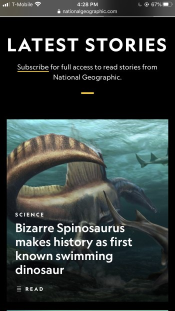
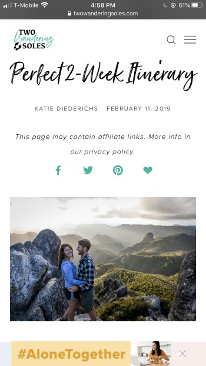

Visual Hierarchy
MotoSport ShopThis site is interesting with utalizing images of what they sell. Such as the image of washing a dirt bike to advertise their spring sale. Great example for featuring the sale and place the next step for the user to input their bike information to find products specific for their bike.
Contrast
Nation Geographic I find National Geographic covers alot of the different principles, but on their open page of their site, this caught my attention.The contrast of the font colors and the photo play well together. Complimenting colors, balanced fonts and visually appealing.
Rule of Third
TwoWanderingSoles What convinced me to check out this site, was this photo. They did a good job at fitting the elements of the image with a focal point. Well balanced with the couple and scenery of New Zealand. Made me want to read more about their experience and advice.